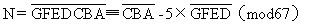
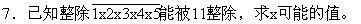
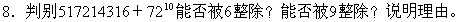
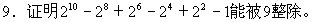
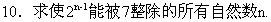

习题六
1.公式1003=17×59曾用于推导判定被17整除的公式，请说明公式②也是判定被59整除的简便公式。
2.说明公式③也是判定被53整除的简便公式。
3.61是质数，并且10004=61×164，你能利用这一等式导出判定被61整除的简便公式吗？
4.67是质数，1005=67×15，请证明：

（可在右端加上67的适当倍数）。
5.994＝71×14，71是质数，请导出判定被71整除的公式。
6.N=31428576可否被37整除？



